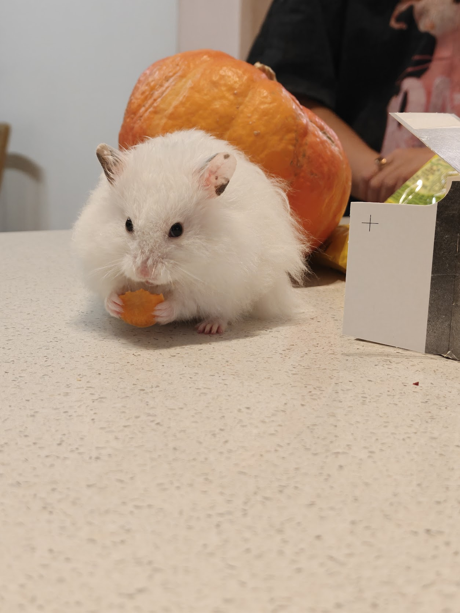

001
The nightly migration
Shortly after dark, Chib begins a sustained journey across the rotating plains. The landscape moves beneath him for considerable distances, while Chib himself remains geographically close to home.

A long-haired Syrian hamster
of unusual dignity, extensive fur,
and considerable spiritual
significance.
Mesocricetus auratus.
Domesticated Syrian hamster.
Long-haired. White.
Apparently holy.
Observations collected from inside the known range of Mr. Tofu Ciabatta.
Shortly after dark, Chib begins a sustained journey across the rotating plains. The landscape moves beneath him for considerable distances, while Chib himself remains geographically close to home.
Seeds are inspected individually, transported with urgency, and subsequently stored in locations known only to Chib. Some are later rediscovered. Others enter legend.
Bedding is moved continuously according to principles not yet understood by outside observers. Entire districts may be reconstructed overnight.
Scholars remain divided. Some point to the immaculate white coat. Others cite the unexplained multiplication of hidden sunflower seeds, his capacity to vanish beneath apparently insufficient bedding, and the recurring restoration of tunnels believed to have collapsed permanently.
Three miracles are currently recognized by tradition. Investigation continues.